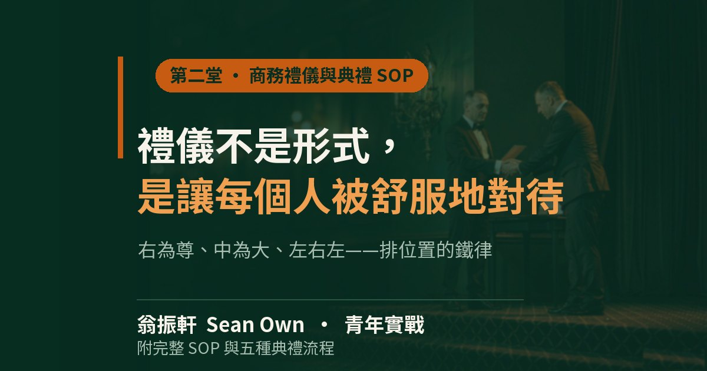

禮儀不是形式，是讓每個人被舒服地對待
第二堂 · 商務禮儀與典禮SOP｜五種典禮的底層邏輯與現場應變
一、很多人以為禮儀是裝樣子在澳門做協會與產業工作這二十多年，我看過太多「以為自己很懂禮儀」的人，真正站在典禮台上才知道，禮儀從來不是形式，而是一門硬功夫。所謂硬，是因為它沒有捷徑：商務宴會你要知道主位坐在哪裡，頒獎典禮你…

KEY POINTS
本堂重點（三句話）
- 禮儀不是形式，是讓每個人站在他應該站的位置上，被尊重，也舒服。
- 右為尊、中為大、左右左——判定基準是「請看你的左右手」，不是觀眾的視角。
- 對外涉外右為上、對內政務左為上；分不清時，上台前問一句最可靠。
以下三句話是整堂課的骨架；正文把它們拆開講，附錄則是可以直接印出來貼在會議室牆上的操作手冊。
一、很多人以為禮儀是裝樣子
在澳門做協會與產業工作這二十多年，我看過太多「以為自己很懂禮儀」的人，真正站在典禮台上才知道，禮儀從來不是形式，而是一門硬功夫。
所謂硬，是因為它沒有捷徑：商務宴會你要知道主位坐在哪裡，頒獎典禮你要知道上台從哪一邊下來，簽約儀式你要知道合約不是簽完就收起來的，而每一個環節背後都有一個「為什麼」，那個「為什麼」往往要等你做錯一次才真正記得。
禮儀這個詞在我們這一行被誤解得太久了，太多人把它理解成穿著得體、說話客氣、笑容得宜——那只是表面，真正的禮儀是讓每個人站在他應該站的位置上，被尊重，也舒服。
這一期我們談的不是西餐怎麼吃、握手要幾下這些表面細節，而是一整套讓活動得以成立的底層邏輯：誰站在哪裡，誰先做什麼，出事怎麼補；這套邏輯一旦想通了，前面所有的儀式細節都會變得理所當然。
二、右為尊、中為大、左右左
我們老祖宗留下一句話：右為尊、中為大、左右左。
這九個字是所有華人典禮的底碼，但要用對它，先得把一件事弄清楚：「右」是誰的右？
答案其實很簡單。人民日報《人民政協》有一篇講左右尊卑的文章，說得比我清楚：「左和右如何確定？請看你的左右手好了，左手即為左邊，右手就是右邊。如果在主席台上，則是以面向觀眾方向為準。」
關鍵就在「請看你的左右手」五個字——左右是以當事人自己的身體為基準，不是以觀眾的視角為基準。
這句話一寫出來，很多事情就通了。所謂「右為尊」，指的是當事人自己的右手邊；兩個人面對面站起來的時候，對方的右邊，就是你的左邊，所以真正要讓出去的位置，是站在對方右手邊的那個位置。
所謂「中為大」，是主賓一定在最中間，這沒有爭議。
所謂「左右左」，是貴賓進場的時候，主人先讓在貴賓的左邊，把貴賓的右手邊讓出來——因為對方自己的右手邊才是尊位。
我見過很多年輕朋友在頒獎典禮上出錯，錯在把獎狀遞給了站在左邊的人，因為在他們看來視覺上比較近、比較順手，但那個「順手」恰恰就是全部的問題——禮儀從來不是給自己順手的，是給對方舒服的。
但這裡有第二層，我一定要講清楚，因為它決定了你在海外能不能用這套規矩。
對外涉外，右為上：國際場合的通例是主方居左、客方居右，因為客方的右手邊就是主方的左手邊，主方站在自己位置的左邊，恰恰是把對方的尊位讓了出來；簽約儀式也是一樣，主方居左、客方居右；甚至掛國旗，客方國旗在右、主方在左（只有美國例外，客方國旗掛在上位）。
對內政務，左為上：這是另一套。內部的主席台排座遵循的是「左為上，右為下」，以面向觀眾方向為準，一號位居左，二號在三號的右手邊。
這兩套規則是相反的，而且判定的第一步不是背規矩，是先問自己：今天這場是涉外，還是對內？ 是涉外就用右為上，是內部的事情就用左為上，兩套混著用最容易出錯。
入境隨俗——所有禮儀都可以彈性，但出發點必須是尊重對方。 我們不能拿著「我對你錯」去壓人，那叫文化沙文主義，不叫禮儀。
而最可靠的做法其實比背規則更簡單：上台前直接問一句「您希望站在哪一邊」，照貴賓的意思站。 這在任何文化、任何場合都不會錯，而且比背對了規則更尊重對方。
所以底線只有一個：你得知道規則從哪裡來，才知道什麼時候可以變通。
三、拍照存檔是常態，不是意外
現在做活動，有一個跟十年前完全不同的現實——幾乎每一個動作都會被鏡頭記錄。
站姿、握手、轉身，這些東西在現場當下可能只是「完成了」，但三小時後它會出現在工作群裡，會出現在客戶的電腦裡，會出現在下一次的會議裡。
這個現實逼著我們把禮儀從「做給現場看」改成「做給鏡頭存」。
我在粵港澳大灣區做過這麼多場活動，一個很深的體會是：禮儀的準備不是典禮開始前才開始的，是在合約簽下去、菜單確定、流程表印出來的那一刻就開始的。 因為那個時候你才會真正開始算：幾位貴賓、幾顆球、幾段綵帶、幾份合約、幾支麥克風。
有件事我必須講在前頭：工作人員一定比貴賓早到，至少 30 分鐘前到位，大型活動的幹部要 1 到 2 小時前到；這 30 分鐘不是浪費，是讓你在貴賓進門之前把最後一次流程走一遍。
說到這裡，我要說一件比較掃興但很真實的事——會出錯的，而且不是小事。
會簽錯名、頒錯人、安全帽不合、剪綵的剪刀不夠利、麥克風沒電，這些不是憑空設想，而是每一場活動都可能發生的事，所以永遠要備案，而且備案不是心態，是道具。
四、五種場景，五套邏輯
4.1 商務宴會：食物就口，不要口就食物
宴會最容易出問題的地方往往不是流程而是細節：椅子要往身體拉近，不要離得太遠，因為食物就口，不要口就食物，距離太遠你得伸長脖子去夾菜，那個姿勢在鏡頭裡非常難看，而且吃相會變得粗魯。
坐滿椅面，不要只坐三分之一裝優雅，因為你待超過一小時，只坐三分之一會累得要命，而疲勞會寫在你的姿勢裡；餐巾布要等主人先打開才跟著打開，這個順序在小禮儀裡代表尊重，在大場合裡代表你懂規矩。
餐桌上有幾件事不該做：打嗝、剔牙、菜渣——這三樣請去洗手間處理，不要在桌上；手機收到包包裡，除非真的很緊急。
至於酒，我自己的原則是不勸酒，因為敬酒是敬意，不是酒量，今天以茶代酒是很常態的事，對方不能喝就配合，不要硬逼乾杯——逼酒在任何場合都不體面。
主人致詞有四步：問候台下貴賓、感謝大家遠道而來、說明今天的願景與期待、舉杯號召祝活動圓滿成功。第四步一定要做，否則大家會舉起杯子卻不知道為什麼。
4.2 頒獎典禮：位置錯了，一切皆錯
頒獎是所有典禮裡最容易出錯的環節，因為它有固定流程、有鏡頭、有被獎的人。
先講站位，這是頒獎最容易搞錯的地方。 判斷之前要先問一句：今天是對內頒獎，還是對外頒獎？
對內頒獎（會長頒給自己的幹部），用的是內部主席台的規矩，左為上，所以會長站在觀眾看到的左邊，受獎者站在右邊。
對外頒獎（頒給政府官員、外賓或合作方），用的是國際慣例，右為上，所以要把對方的右手邊讓出來，也就是主辦方自己站在左邊。
很多人在這裡出錯，是因為把兩套規則記混了——記住了「主方站左」卻不分對內對外，拿到對內的場合也照樣讓右，結果主位反而站錯了。分不清的時候，最可靠的做法是上台前問一句「您希望站在哪一邊」，照貴賓的意思站。
流程本身不複雜：司儀介紹頒獎貴賓，禮賓人員持獎狀正面朝上遞給頒獎者，受獎者從觀眾左邊（舞台右側）上台，頒獎者左手拿獎狀右手握手，身體微轉向鏡頭微笑合影，受獎者從後方下台回座。
但有兩個細節，決定了整個環節會不會讓觀眾覺得「這個單位很不專業」。
第一個，上台從觀眾左邊（也就是舞台右側）上，回座從後面走，不要從前面穿越。 前面穿越會擋住主嘉賓的視線，也會擋住其他獲獎者。
第二個，人多時請一位代表上台領，其他人站後排。 不要一個個跑流程，那會讓整場典禮拖長二十多分鐘，而且沒有人記得那些沒上台的人。
還有一個很實際的建議：大獎放在前面或後面，看實際情況決定。原則只有一個——如果貴賓要早走，大獎就排在前面。
4.3 簽約儀式：合約不是簽完就收的
簽約是所有活動裡法律風險最高的一種，因為它有合約、有證人、有鏡頭。
前置準備最重要的是兩份合約，不是禮節，是保險，防簽錯字，防有人故意簽錯。
桌上要放雙方國旗或公司招牌當背景，簽約者雙方職位要對等，服裝要正式。
流程裡最容易被忽略的一步是「互相交換，再在對方那份上再簽一次」。很多人以為交換只是換個動作，其實這是為了讓雙方都在對方的合約上留下簽名，法律上才算完整。
然後，簽完之後不要急著收起來，要站起來、握手、看著對方、說一句「合作圓滿」，然後舉起兩份合約面向鏡頭合影，合約被禮賓人員收回，是在合影之後。
還有一條常被忽略的：簽約者不能提前離席，人一走，這個環節就不算完成。
4.4 動土典禮：三鏟同步，最怕口令亂
動土典禮的道具很簡單：金鏟子（紅布包柄，象徵喜氣）、安全帽（備大小兩款）、白手套、一個預先弄好的土堆。
流程的核心是三鏟而且必須同步，由司儀喊口令，第一鏟是「人員平安、工程圓滿」，第二鏟是「奠基永固、萬事平安」，第三鏟是「千秋大業、宏圖大展」。
這裡有一個很容易出錯的細節：第一鏟還沒挖完，不要自己先動，聽司儀的口令，這是團隊紀律不是個人習慣。
然後是安全帽，寧大勿小，不要遮到臉，因為遮到臉的合照等於沒拍，新聞稿上會寫「貴賓戴著安全帽動土」，但那張照片沒法用。
還有一個很現實的應變：良辰吉時到了，主賓還沒到怎麼辦？預備代理人，不要錯過時辰，因為吉時這種東西在傳統上是不能等的。
4.5 剪綵儀式：彩球不要落地
剪綵是我最喜歡的環節，因為它有儀式感，而且幾乎不會出大錯——除非你算錯了。
道具是長柄剪刀（像布剪那種，不要用小剪刀）、托盤、白手套、彩球和綵帶。
最關鍵的是先算數：幾位貴賓，就是幾顆球、幾段綵帶。 這個數在典禮前一晚就要確認，不能到現場才數。
人員分工是四個角色：司儀喊口令、禮賓人員迎送遞剪刀手套、拉彩者拉緊兩端、托盤者穩托剪刀把柄朝貴賓。
流程的重點是：貴賓由禮賓引導定位，主賓在中間；禮賓遞手套和剪刀，把柄朝人，點頭示意即可，不用說話；司儀倒數五、四、三、二、一；同時剪斷。
剪斷之後，彩球由禮賓人員接住，不要落地。 為什麼？因為彩球落地在傳統裡是不吉利的諺音，而更實際的原因是——彩球掉在地上，整個畫面就毀了，賓客也撿得彆扭。
彩球不要落地，那是活動的氣。
應變很簡單：人少沒禮賓，就讓每位貴賓自己抱一顆球，剪完往上串，象徵「興旺」「一個億」，氣氛反而更熱烈；剪刀剪不斷，預備備用剪刀；服裝要正式、戴手套，氣勢上不能鬆。
五、最重要的那一條：不要讓觀眾看到你慌
我把所有突發狀況整理成一張表。
| 狀況 | 第一反應 | 後續 |
|---|---|---|
| 麥克風壞 | 不慌、提高音量繼續 | 事後檢查承辦流程 |
| PPT 當機 | 「資料都在我腦子裡」裸講 | 重拍、補錄 |
| 簽約簽錯名 | 換備份合約 | 事後釐清責任 |
| 頒獎頒錯人 | 司儀立刻上台圓場，換回正確者 | 事後檢核名單 |
| 貴賓遲到錯過吉時 | 預備代理人先上 | 事後向貴賓說明 |
| 安全帽不合 | 備大小兩款 | 事後補充尺寸表 |
| 貴賓臨時不能來 | 活動照樣進行、誠實公告 | 事後慰問 |
| 重量級貴賓遲到 | 先安撫在場人交流，等 | 不要先開席 |
| 貴賓不喝酒 | 以茶或果汁代，照敬 | — |
| 一直被敬酒拍照拖時間 | 安排老槍手幫忙代喝，有底線 | — |
這張表裡面最重要的不是方法而是心態，因為每一個「第一反應」都指向同一件事：不要讓觀眾看到你慌。
我們在澳門做活動難免會遇到狀況，麥克風真的會壞，PPT 真的會當機，貴賓真的會遲到，但台下幾百位觀眾不會記得你的器材壞了，他們只會記得你的表情——心裡再慌，聲音要穩，這不是演技巧，是敬業。
禮儀走到最後，其實講的不是動作，而是分寸：讓每個人被尊重，也讓每個人都舒服，這才是我們做活動最該守住的那一條線。
附錄：商務禮儀與典禮 SOP
一、道具檢查清單（典禮前一晚）
| 項目 | 規格要求 |
|---|---|
| 剪刀 | 長柄、像布剪那種，不要小剪刀 |
| 托盤、白手套 | 備一至兩副 |
| 彩球、綵帶 | 算清楚位數，與貴賓人數一致 |
| 安全帽 | 備大小兩款，寧大勿小，不要遮到臉 |
| 鏟子 | 動土用，紅布包柄 |
| 合約書 | 備兩份，防簽錯 |
| 鋼筆／簽名筆 | 測過有水 |
| 獎狀／感謝狀 | 正面朝上放 |
| 麥克風 | 備一支無線後備 |
| 攝影機 | 位置與走位彩排 |
二、排位鐵律
判定基準：左右以當事人自己的身體為準（人民日報《人民政協》：「請看你的左右手好了」）。
所謂「右為尊」是當事人的右手邊；兩人面對面時，對方的右邊就是你的左邊。
| 場合 | 適用規則 | 站位 |
|---|---|---|
| 對外頒獎（政府官員／外賓／合作方） | 國際慣例，右為上 | 主辦方站左，把對方的右手邊讓出來 |
| 對內頒獎（會長頒給幹部） | 內部主席台，左為上 | 會長站左，受獎者站右 |
| 簽約儀式 | 涉外，右為上 | 主方居左，客方居右 |
| 內部主席台排座 | 中辦規定，左為上 | 1 號居左，2 號在其右手邊 |
| 掛國旗 | 客方在右 | 客方國旗在右，主方在左（美國例外） |
| 上台 | — | 從觀眾左邊（舞台右側）上 |
| 回座 | — | 從後面走，不要從前面穿越 |
| 剪綵 | — | 主賓在中間，左右左右 |
分不清的時候，上台前問一句「您希望站在哪一邊」，照貴賓的意思站。
這比背對了規則更尊重對方，也不會在任何文化裡出錯。
三、主人致詞四步
| 順序 | 內容 |
|---|---|
| 一 | 問候台下貴賓 |
| 二 | 感謝大家遠道而來 |
| 三 | 說明今天活動的願景與期待 |
| 四 | 舉杯號召，祝活動圓滿成功 |
四、頒獎流程
| 步驟 | 動作 |
|---|---|
| 一 | 司儀介紹頒獎貴賓 |
| 二 | 禮賓人員持獎狀正面朝上遞給頒獎者 |
| 三 | 受獎者從觀眾左邊（舞台右側）上台 |
| 四 | 頒獎者左手拿獎狀、右手握手 |
| 五 | 身體微轉向鏡頭，微笑合影 |
| 六 | 受獎者從後方下台回座 |
五、簽約流程
| 步驟 | 動作 |
|---|---|
| 一 | 司儀請甲乙雙方入席（主方居左，把客方的右手邊讓出來） |
| 二 | 助簽人員把合約書打開，放到簽名處 |
| 三 | 雙方在自己份上簽名 |
| 四 | 互相交換，再在對方份上簽一次 |
| 五 | 雙方站起、握手、看著對方，說「合作圓滿」 |
| 六 | 面對鏡頭合影（兩份合約都舉好） |
| 七 | 舉杯慶祝（香檳或茶） |
| 八 | 禮賓人員收回合約 |
六、動土三鏟
| 鏟次 | 口令 | 注意事項 |
|---|---|---|
| 第一鏟 | 人員平安、工程圓滿 | 聽司儀口令，不要自己先動 |
| 第二鏟 | 奠基永固、萬事平安 | 鏟口方向一致 |
| 第三鏟 | 千秋大業、宏圖大展 | 全體面向鏡頭合影 |
七、剪綵人員分工
| 角色 | 工作 |
|---|---|
| 司儀 | 喊口令、介紹貴賓 |
| 禮賓人員 | 迎送貴賓、遞剪刀手套、扶彩球 |
| 拉彩者 | 拉緊綵帶兩端 |
| 托盤者 | 穩托剪刀、把柄朝貴賓 |
八、剪綵流程
| 步驟 | 動作 |
|---|---|
| 一 | 貴賓由禮賓引導到定位（主賓在中間，左右左右） |
| 二 | 禮賓遞手套、剪刀（把柄朝人，點頭示意即可） |
| 三 | 司儀倒數「5-4-3-2-1」或「3-2-1」 |
| 四 | 同時剪斷 |
| 五 | 彩球由禮賓人員接住，不要落地 |
| 六 | 舉剪刀面向鏡頭合影 |
| 七 | 放下剪刀、交還禮賓 |
| 八 | 主人領先進場參觀，接酒會 |
九、幾句值得記下來的話
禮儀不是形式，是讓每個人在適當的位置被尊重、被舒服地對待。
右為尊、中為大、左右左——這是排位置的鐵律。
敬酒是敬意，不是酒量。
食物就口，不要口就食物。
彩球不要落地——那是活動的氣。
心裡再慌，聲音要穩。